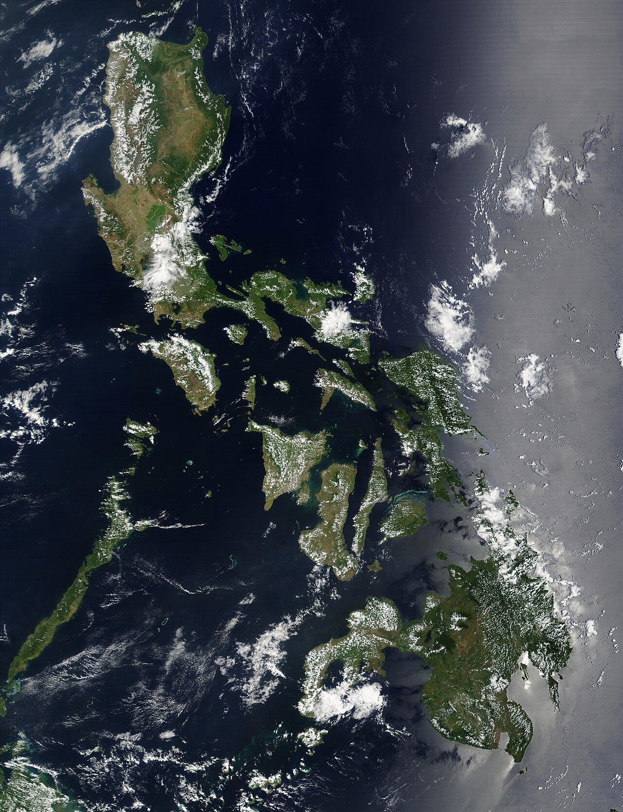
lesson-1-world-map
Satellite Image of the Philippine Islands
File: l01-visual-a.jpg (1280x1670)
Creator: NASA Goddard Space Flight Center
Organization: National Aeronautics and Space Administration (NASA)
License: Public Domain
SHA-256:
f12f55ff790b...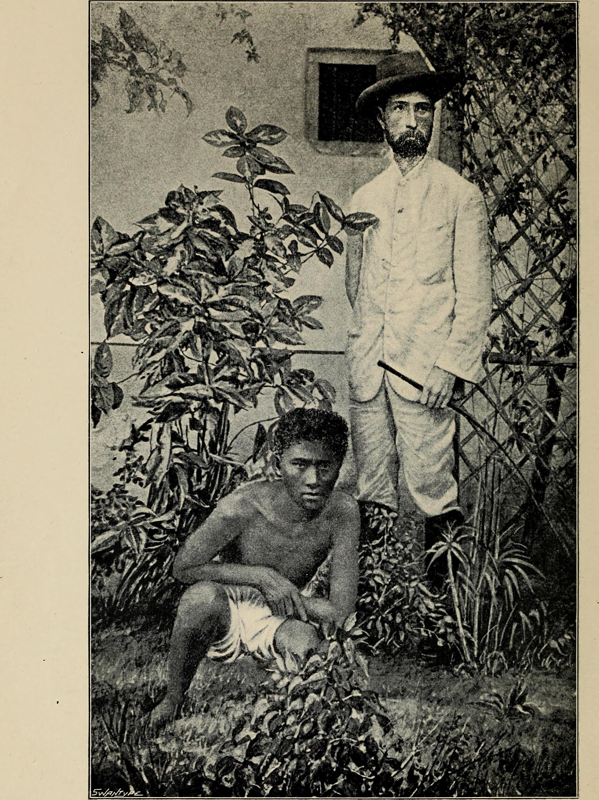
lesson-1-world-map
Carta Hydrographica y Chorographica de las Yslas Filipinas (1734)
File: l01-visual-b.jpg (1920x1793)
Creator: Pedro Murillo Velarde
Organization: Biblioteca Nacional de España / Library of Congress
License: Public Domain
SHA-256:
e7e4a155c279...
lesson-2-archipelago
Puerto Princesa Subterranean River
File: l02-visual-a.jpg (1280x855)
Creator: Mike Gonzalez (TheCoffee)
Organization: Wikimedia Commons
License: CC BY-SA 3.0
SHA-256:
11670fce710c...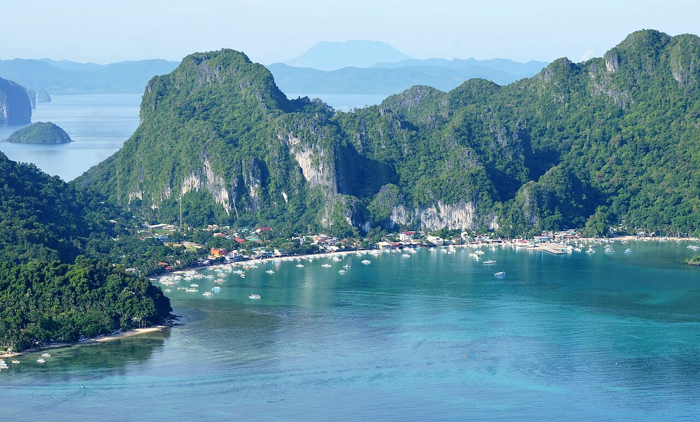
lesson-2-archipelago
El Nido Limestone Karst Formations
File: l02-visual-b.jpg (1280x774)
Creator: Christian Bickel
Organization: Wikimedia Commons
License: CC BY-SA 2.0
SHA-256:
ce4a2405ceb4...
lesson-3-luzon-visayas-mindanao
Three Stars and Sun of the Philippine Flag
File: l03-visual-a.svg (1280x720)
Creator: Government of the Philippines (Vectorized by E Pluribus Anthony)
Organization: National Historical Commission of the Philippines
License: Public Domain
SHA-256:
b0010e0b5f59...
lesson-3-luzon-visayas-mindanao
Three Major Island Groups of the Philippines
File: l03-visual-b.svg (1280x720)
Creator: HueSatLum
Organization: Wikimedia Commons
License: CC BY-SA 3.0
SHA-256:
4a6977b648de...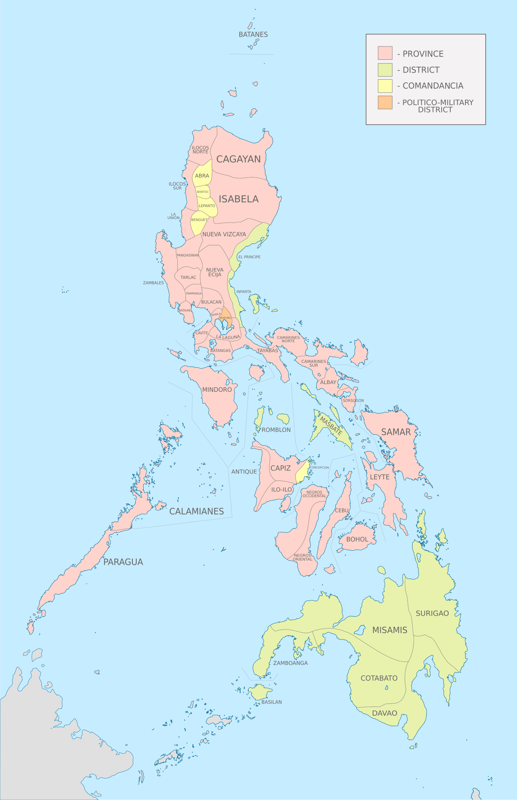
lesson-4-region
Philippine Administrative Regional Divisions
File: l04-visual-a.svg (1280x720)
Creator: U.S. War Department (Vectorized by Hariboneagle927)
Organization: National Archives and Records Administration (NARA)
License: Public Domain
SHA-256:
e415278237b5...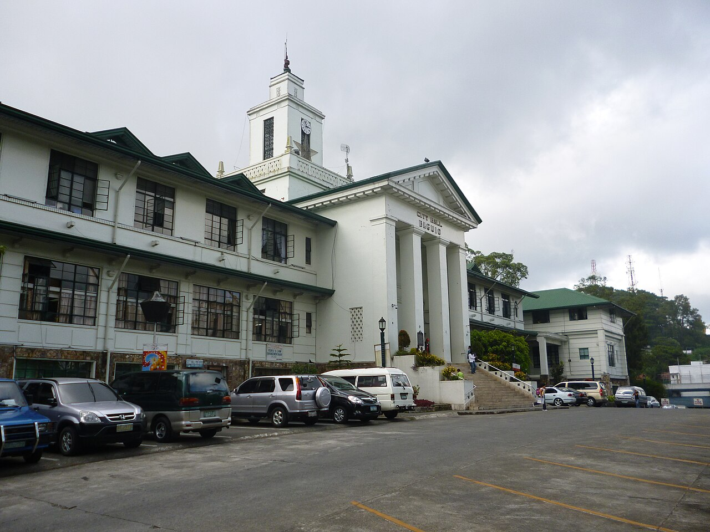
lesson-4-region
Cordillera Regional Governance Center in Baguio
File: l04-visual-b.jpg (1280x960)
Creator: Ramon FVelasquez
Organization: Wikimedia Commons
License: CC BY-SA 3.0
SHA-256:
ba61e38475a2...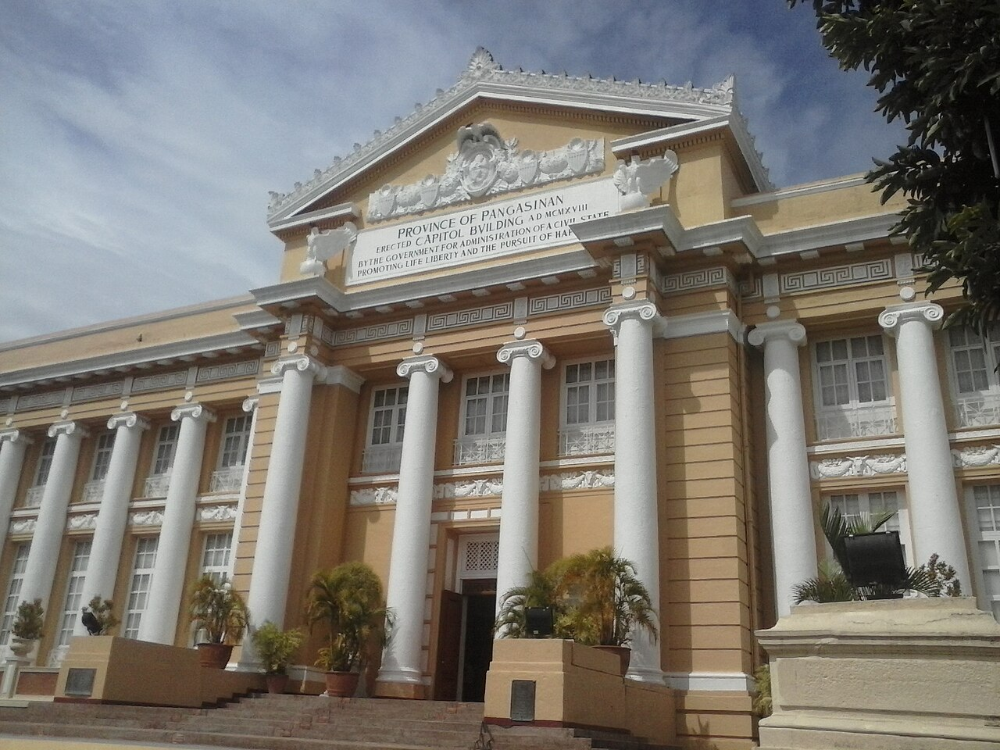
lesson-5-province
Pangasinan Provincial Capitol Building
File: l05-visual-a.jpg (1280x960)
Creator: Ramon FVelasquez
Organization: Wikimedia Commons
License: CC BY-SA 3.0
SHA-256:
59891f300d2d...
lesson-5-province
Historic Leyte Provincial Capitol
File: l05-visual-b.jpg (1280x807)
Creator: Ramon FVelasquez
Organization: Wikimedia Commons
License: CC BY-SA 3.0
SHA-256:
e2bbadbf2f35...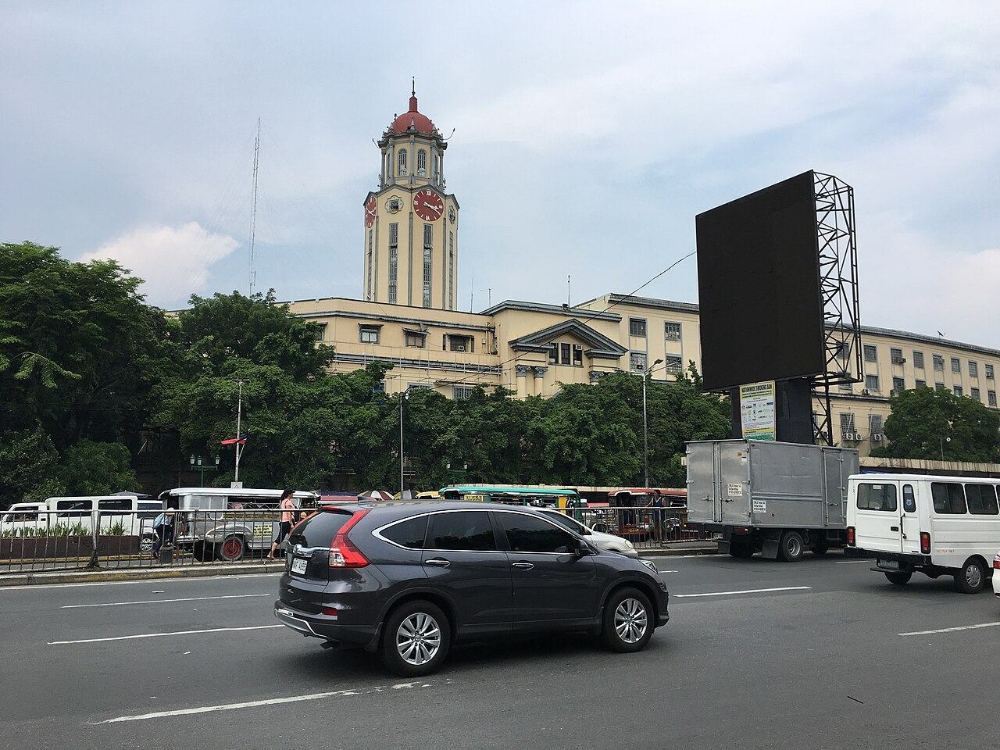
lesson-6-city
Manila City Hall and Clock Tower
File: l06-visual-a.jpg (1280x960)
Creator: Patrickroque01
Organization: Wikimedia Commons
License: CC BY-SA 4.0
SHA-256:
9cacab73f94b...
lesson-6-city
Barangay Community Center
File: l06-visual-b.jpg (480x640)
Creator: Judgefloro
Organization: Wikimedia Commons
License: CC0 1.0
SHA-256:
510fd4a3fe42...
lesson-7-national-symbols
Philippine Eagle (National Bird)
File: l07-visual-a.jpg (388x477)
Creator: Klaus Stiefel
Organization: Wikimedia Commons
License: CC BY-SA 2.0
SHA-256:
fe44e67b4b46...
lesson-7-national-symbols
Sampaguita Flower (National Flower)
File: l07-visual-b.jpg (1280x960)
Creator: Judgefloro
Organization: Wikimedia Commons
License: CC0 1.0
SHA-256:
97a2e1a081b3...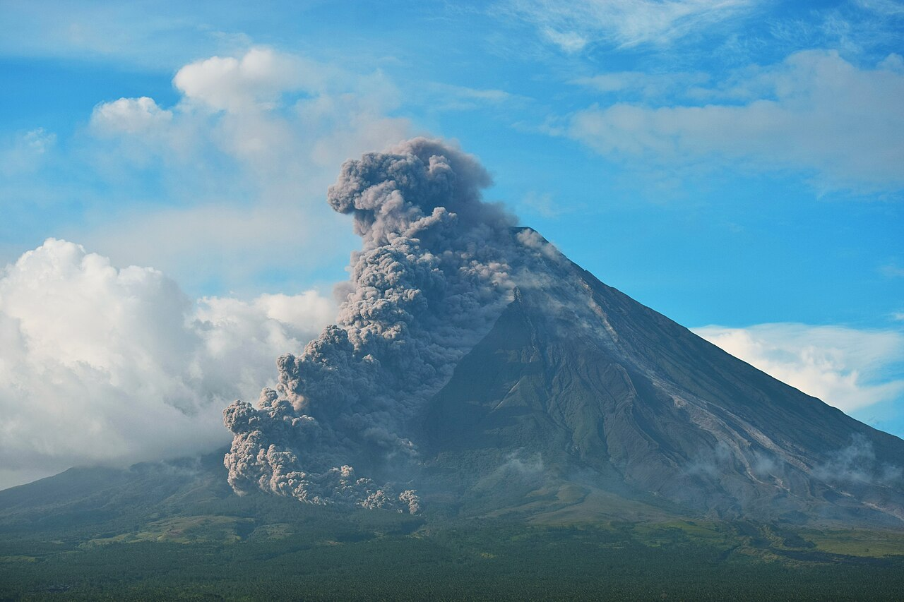
lesson-8-mountains
Mayon Volcano from Daraga Church
File: l08-visual-a.jpg (1280x853)
Creator: Tomas Tam
Organization: Wikimedia Commons
License: CC BY-SA 3.0
SHA-256:
871fa2b2fc3a...
lesson-8-mountains
Mount Apo Majestic Peak (Highest Point in the Philippines)
File: l08-visual-b.jpg (300x227)
Creator: Kounosu
Organization: Wikimedia Commons
License: CC BY-SA 3.0
SHA-256:
a893aa162dba...
lesson-9-rivers-beaches
Taal Volcano and Crater Lake
File: l09-visual-a.jpg (800x600)
Creator: TheCoffee
Organization: Wikimedia Commons
License: CC BY-SA 3.0
SHA-256:
30d9fbc34d44...
lesson-9-rivers-beaches
Boracay White Beach Coastal Waters
File: l09-visual-b.jpg (1280x853)
Creator: Deivster
Organization: Wikimedia Commons
License: CC BY 2.0
SHA-256:
8174ca6dcc77...
lesson-10-animals
Philippine Tarsier in Bohol Sanctuary
File: l10-visual-a.jpg (1280x1707)
Creator: Stefan Maszewski
Organization: Wikimedia Commons
License: CC BY-SA 3.0
SHA-256:
60386f5f47eb...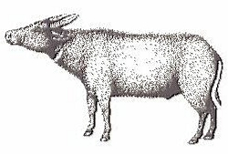
lesson-10-animals
Tamaraw of Mindoro (Bubalus mindorensis)
File: l10-visual-b.jpg (250x169)
Creator: Richard Lydekker
Organization: Biodiversity Heritage Library / Zoological Society of London
License: Public Domain
SHA-256:
620c2c585232...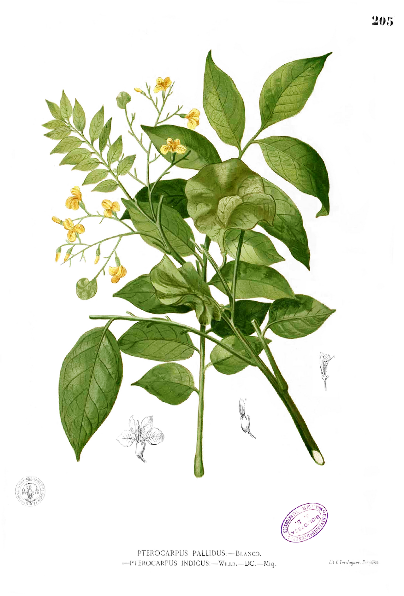
lesson-11-plants
Narra Tree Botanical Illustration (Flora de Filipinas)
File: l11-visual-a.png (1280x1890)
Creator: Francisco Manuel Blanco
Organization: Flora de Filipinas / Real Jardín Botánico de Madrid
License: Public Domain
SHA-256:
a20eede44f8e...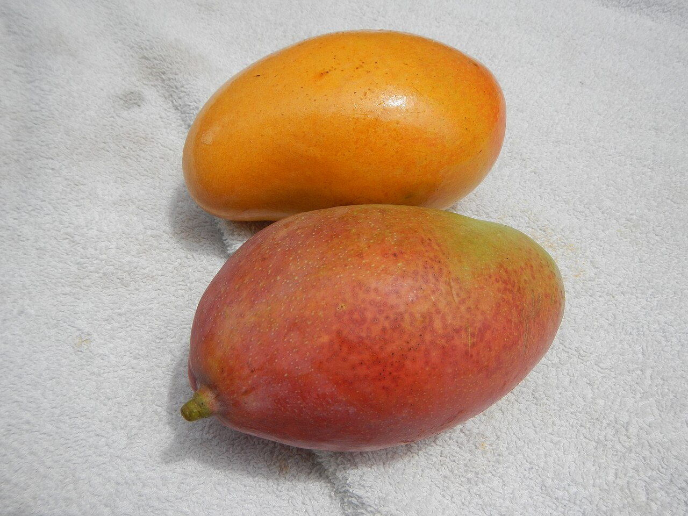
lesson-11-plants
Philippine Carabao Mango Tree and Foliage
File: l11-visual-b.jpg (1280x960)
Creator: Judgefloro
Organization: Wikimedia Commons
License: CC0 1.0
SHA-256:
5c350ab9b91e...
lesson-12-language
Baybayin Ancient Philippine Syllabary Character
File: l12-visual-a.svg (1280x720)
Creator: Nino Barbieri
Organization: Wikimedia Commons
License: CC BY-SA 2.5
SHA-256:
3d9c9f2629b1...
lesson-12-language
Students Celebrating Buwan ng Wika in Traditional Attire
File: l12-visual-b.jpg (1280x960)
Creator: Harold Saldy
Organization: Wikimedia Commons
License: CC BY-SA 3.0
SHA-256:
8ae1de0d9a8d...
lesson-13-august-review
Ifugao Cultural Heritage in Banaue
File: l13-visual-a.jpg (1280x853)
Creator: CEphoto, Uwe Aranas
Organization: Wikimedia Commons
License: CC BY-SA 3.0
SHA-256:
b8edd20bd410...
lesson-13-august-review
Chocolate Hills Geological Formation of Bohol
File: l13-visual-b.jpg (1010x757)
Creator: Ramir Borja (Derivative work by MrPanyGoff)
Organization: Wikimedia Commons
License: CC BY-SA 3.0
SHA-256:
c4e07042cc0a...
lesson-14-greetings
Traditional Handcrafted Barong Tagalog
File: l14-visual-a.jpg (1280x1760)
Creator: Barongguy1
Organization: Wikimedia Commons
License: CC BY-SA 3.0
SHA-256:
aa1fb5c18839...
lesson-14-greetings
Filipino School Children Welcoming and Greeting Visitors
File: l14-visual-b.jpg (4288x2848)
Creator: MCCS Spike Call, US Navy
Organization: United States Navy / Department of Defense
License: Public Domain
SHA-256:
1e7105474380...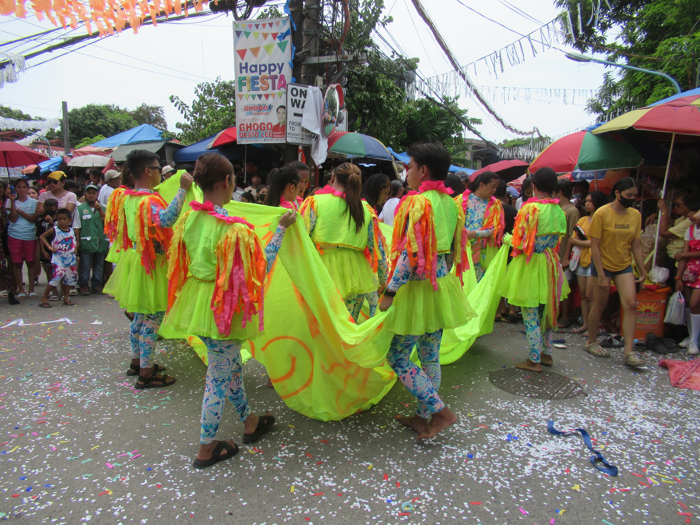
lesson-15-respectful-gestures
Traditional Mano Po Filipino Elder Blessing Gesture
File: l15-visual-a.jpg (5184x3888)
Creator: McpoJMdeLeon
Organization: Wikimedia Commons
License: CC BY-SA 4.0
SHA-256:
568890b78ed1...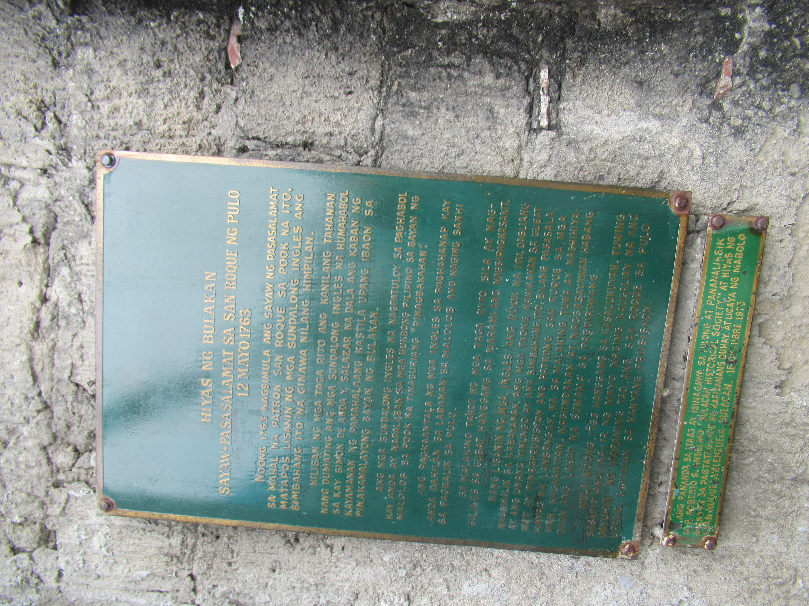
lesson-15-respectful-gestures
Pagmamano Cultural Tradition and Reverence for Elders
File: l15-visual-b.jpg (5184x3888)
Creator: McpoJMdeLeon
Organization: Wikimedia Commons
License: CC BY-SA 4.0
SHA-256:
7760710ed5ea...
lesson-16-family
Filipino Family Outside Parish Church
File: l16-visual-a.jpg (1280x960)
Creator: Judgefloro
Organization: Wikimedia Commons
License: CC0 1.0
SHA-256:
2add71024811...
lesson-16-family
Traditional Bahay Kubo Family Homestead
File: l16-visual-b.jpg (700x473)
Creator: Obsidian Soul
Organization: Wikimedia Commons
License: CC BY-SA 3.0
SHA-256:
711b03bff130...
lesson-17-body-parts
Traditional Sepak Takraw / Sipa Athletic Kick
File: l17-visual-a.jpg (962x708)
Creator: Arian Zwegers
Organization: Wikimedia Commons
License: CC BY 2.0
SHA-256:
030e4e88fe66...
lesson-17-body-parts
Children Active Play and Movement on Philippine Beach
File: l17-visual-b.jpg (1280x853)
Creator: Whologwhy
Organization: Wikimedia Commons
License: CC BY 2.0
SHA-256:
c961a48e074b...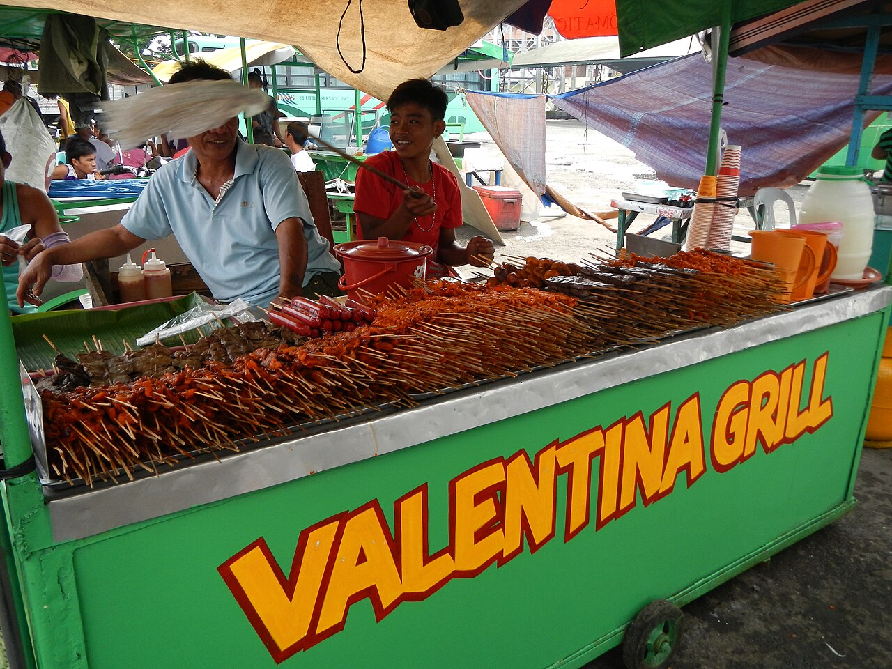
lesson-18-food
Warm Filipino Mealtime and Table Setting
File: l18-visual-a.jpg (1280x960)
Creator: Judgefloro
Organization: Wikimedia Commons
License: CC0 1.0
SHA-256:
2d312f20a872...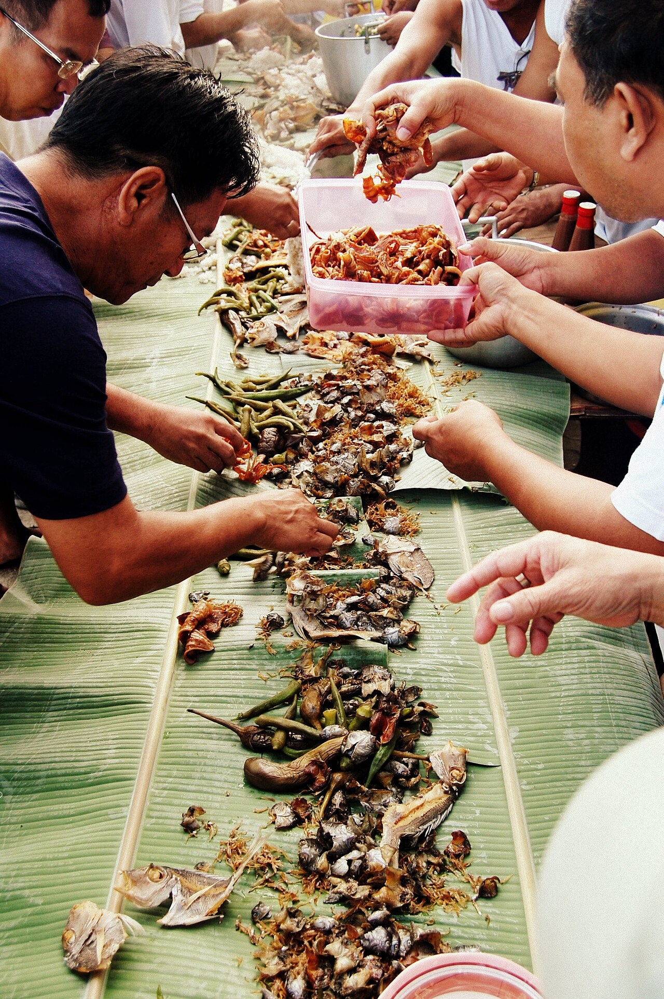
lesson-18-food
Kamayan Boodle Fight Feast on Banana Leaves
File: l18-visual-b.jpg (1280x1925)
Creator: Shubert Ciencia
Organization: Wikimedia Commons
License: CC BY 2.0
SHA-256:
7d5fa289119c...
lesson-19-emotions
Historic Photograph of Empathetic Filipino Schoolchildren
File: l19-visual-a.jpg (493x346)
Creator: American Red Cross
Organization: Library of Congress
License: Public Domain
SHA-256:
8bb9496c40d6...
lesson-19-emotions
Community Empathy and Pakikipagkapwa in Action
File: l19-visual-b.jpg (1280x851)
Creator: MCS3 Joshua Scott, US Navy
Organization: United States Navy
License: Public Domain
SHA-256:
bb9c235e41ab...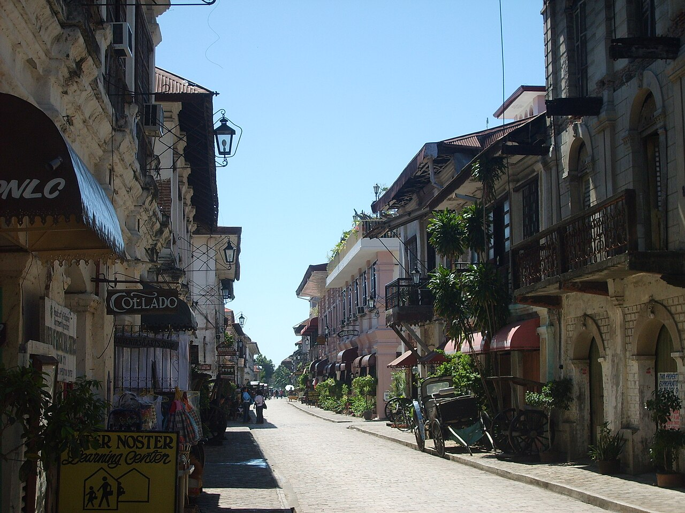
lesson-20-homes
Calle Crisologo Ancestral Houses in Vigan
File: l20-visual-a.jpg (1280x960)
Creator: Bernard Gagnon
Organization: Wikimedia Commons
License: CC BY-SA 3.0
SHA-256:
0fba6f89ceab...
lesson-20-homes
Traditional Bahay na Bato Architecture
File: l20-visual-b.jpg (1280x1707)
Creator: Ramon FVelasquez
Organization: Wikimedia Commons
License: CC BY-SA 3.0
SHA-256:
f69da3c5453a...
lesson-21-schools
Filipino Students in Classroom Learning Environment
File: l21-visual-a.jpg (1280x958)
Creator: PCM Volunteer Team
Organization: Philippine Community Mission
License: CC BY-SA 3.0
SHA-256:
5fdf6016dee6...
lesson-21-schools
Morning Flag Ceremony at Philippine School
File: l21-visual-b.jpg (1280x960)
Creator: SAGA School Staff
Organization: Wikimedia Commons
License: CC BY-SA 4.0
SHA-256:
f9d1406b4d75...
lesson-22-markets
Sa Palengke Wet Market Commerce in Danao City
File: l22-visual-a.jpg (1280x977)
Creator: Hulagway / Mark Lester
Organization: Wikimedia Commons
License: CC BY 2.0
SHA-256:
3609327a3ff0...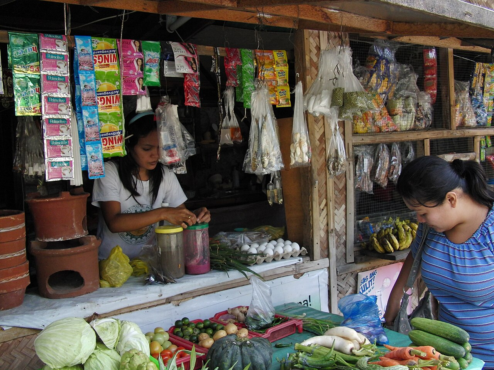
lesson-22-markets
Neighborhood Sari-Sari Store in Samal Davao
File: l22-visual-b.jpg (1280x960)
Creator: Shubert Ciencia
Organization: Wikimedia Commons
License: CC BY 2.0
SHA-256:
4eb612b535fa...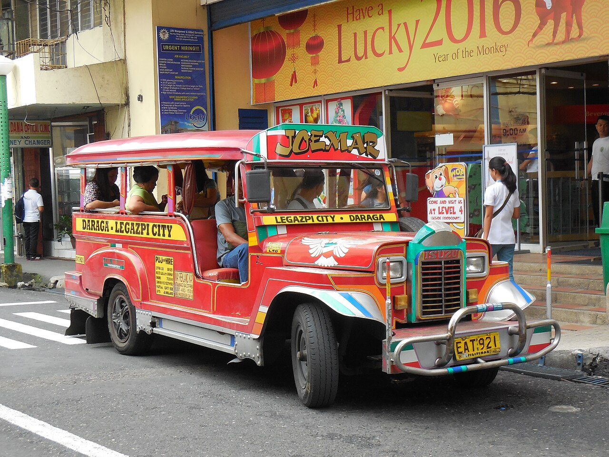
lesson-23-transportation
Iconic Hand-Painted Philippine Jeepney
File: l23-visual-a.jpg (1280x960)
Creator: Ramon FVelasquez
Organization: Wikimedia Commons
License: CC BY-SA 3.0
SHA-256:
64ae460035a7...
lesson-23-transportation
Philippine Motorized Tricycle Public Transport
File: l23-visual-b.jpg (1024x768)
Creator: Judgefloro
Organization: Wikimedia Commons
License: CC0 1.0
SHA-256:
8534c7891c15...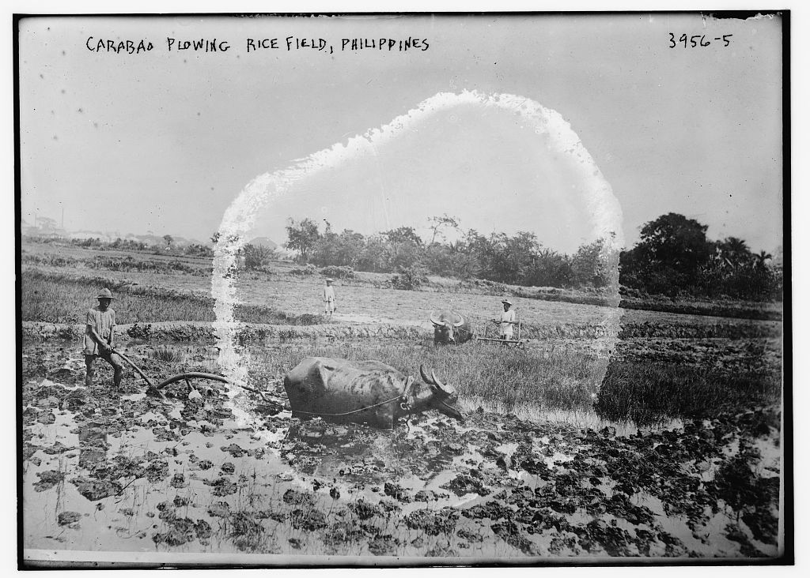
lesson-24-carabao
Water Buffalo Carabao Plowing Rice Field
File: l24-visual-a.jpg (1024x732)
Creator: Harris & Ewing
Organization: Library of Congress
License: Public Domain
SHA-256:
5eea8644b8e2...
lesson-24-carabao
Kneeling Carabao Festival in Baliwag Bulacan
File: l24-visual-b.jpg (1280x960)
Creator: Judgefloro
Organization: Wikimedia Commons
License: CC0 1.0
SHA-256:
9bd8d327b00e...
lesson-25-community-helpers
Barangay Community Health Worker in Action
File: l25-visual-a.jpg (1280x964)
Creator: Sgt. 1st Class Brian Reed
Organization: US Army / DOD
License: Public Domain
SHA-256:
5dde35079459...
lesson-25-community-helpers
Philippine Coast Guard and Emergency Rescue Responders
File: l25-visual-b.jpg (1280x851)
Creator: Sgt. Valerie Eppler
Organization: US Marine Corps / DOD
License: Public Domain
SHA-256:
8c5d9a533964...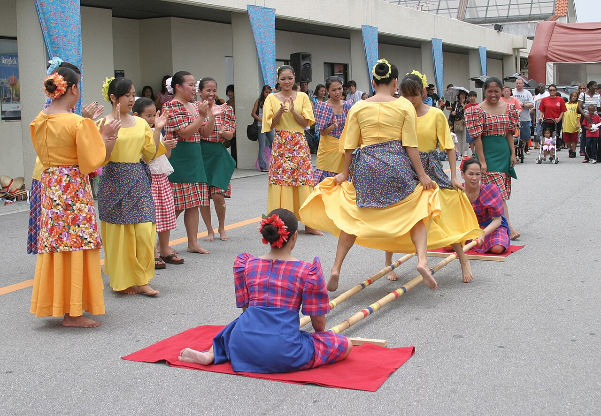
lesson-26-september-review
Tinikling Traditional Bamboo Dance Performance
File: l26-visual-a.jpg (1280x887)
Creator: Senior Airman Nestor Cruz
Organization: US Air Force
License: Public Domain
SHA-256:
1a6a123f0e62...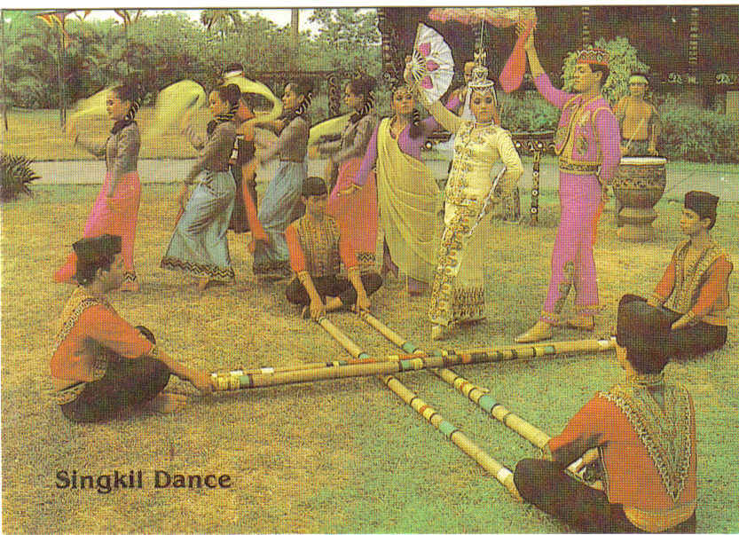
lesson-26-september-review
Singkil Royal Maranao Bamboo Dance
File: l26-visual-b.jpg (833x603)
Creator: Bulaclac Paruparu
Organization: Wikimedia Commons
License: CC BY 2.0
SHA-256:
c37b01cfca8b...
lesson-27-bayanihan
Bayanihan Community Carrying House (Lipat Bahay)
File: l27-visual-a.jpg (960x1660)
Creator: Bonvallite
Organization: Wikimedia Commons
License: CC BY-SA 3.0
SHA-256:
acf9a93a2cae...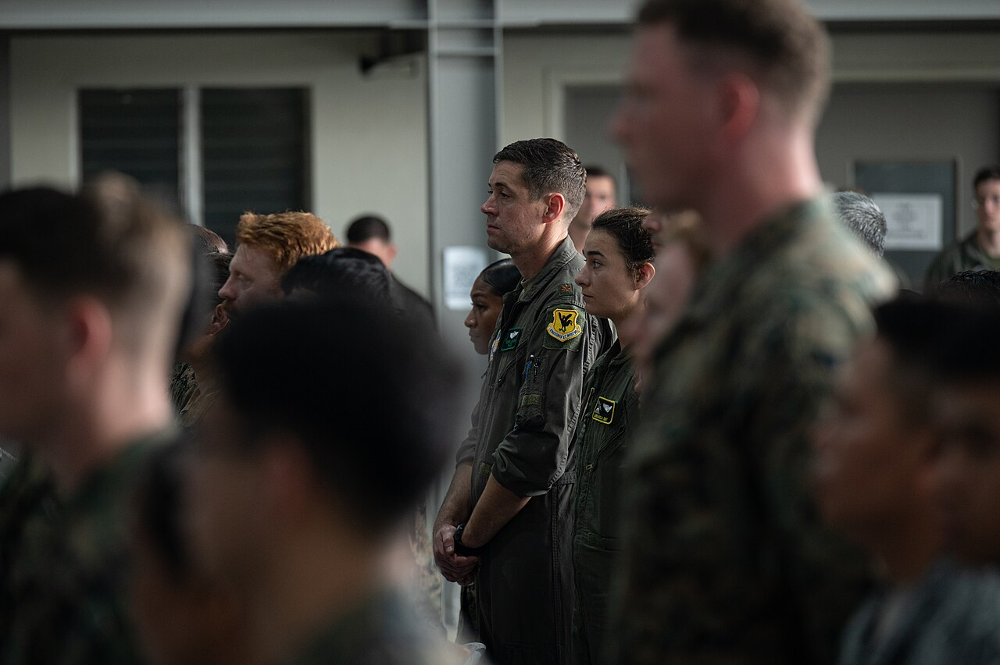
lesson-27-bayanihan
Community Disaster Relief and Bayanihan Cooperation
File: l27-visual-b.jpg (1280x852)
Creator: Tech. Sgt. Micaiah Anthony
Organization: US Air Force
License: Public Domain
SHA-256:
21b5f721a6e0...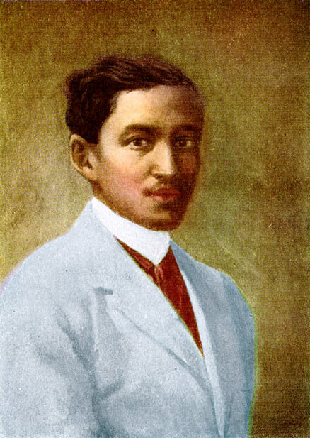
lesson-28-jose-rizal
Dr. José Rizal Historical Portrait
File: l28-visual-a.jpg (438x617)
Creator: Austin Craig
Organization: National Library of the Philippines / Gutenberg
License: Public Domain
SHA-256:
f523e4ac4059...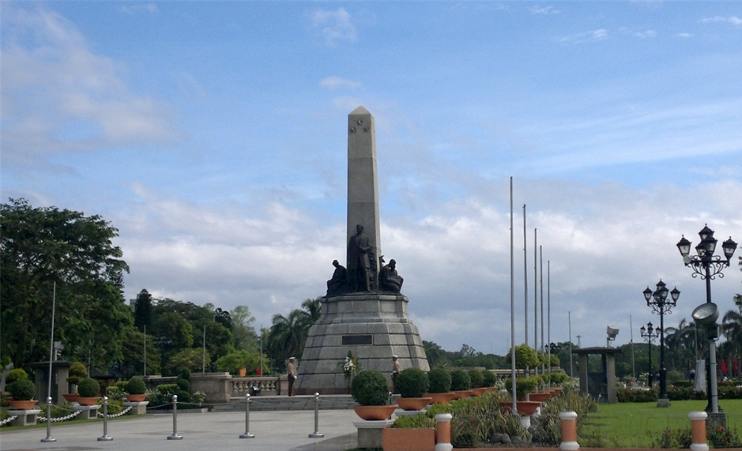
lesson-28-jose-rizal
Rizal National Monument in Luneta Park Manila
File: l28-visual-b.jpg (939x571)
Creator: Joeymdph
Organization: Wikimedia Commons
License: CC BY-SA 3.0
SHA-256:
462d50cbb468...
lesson-29-andres-bonifacio
Andrés Bonifacio Supreme Leader of the Katipunan
File: l29-visual-a.jpg (225x298)
Creator: Francis St. Clair
Organization: University of Michigan / Internet Archive
License: Public Domain
SHA-256:
386f99fc8ca8...
lesson-29-andres-bonifacio
Guillermo Tolentino's Bonifacio Monument in Caloocan
File: l29-visual-b.jpg (1280x1707)
Creator: Guillermo Tolentino (Photo by RamirBorja)
Organization: National Historical Commission
License: CC BY-SA 2.5
SHA-256:
f676b70fb8b6...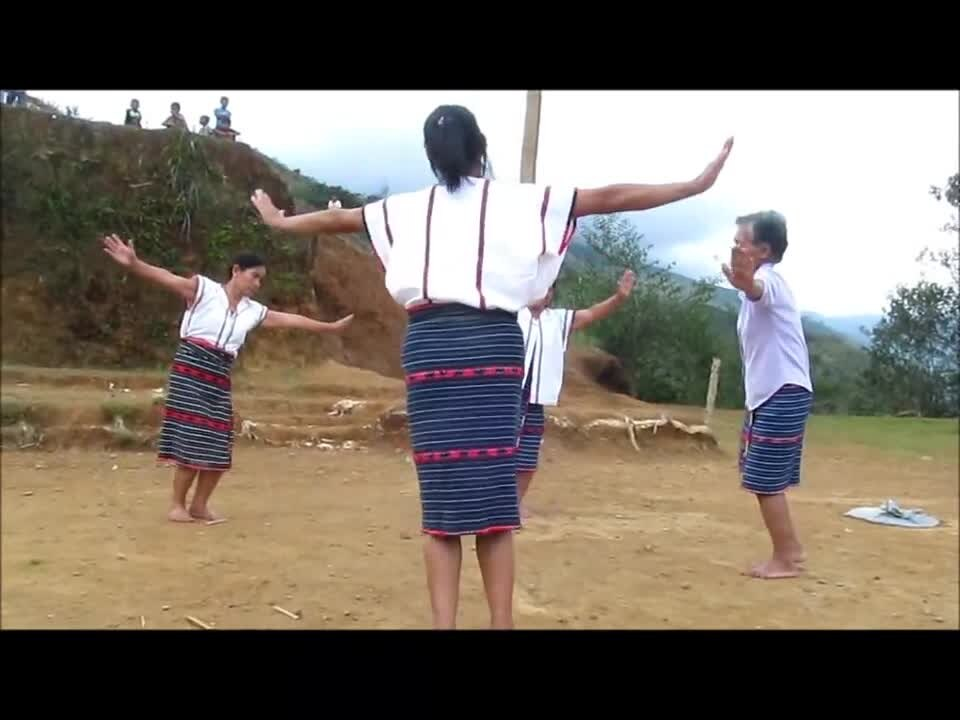
lesson-30-gabriela-silang
Gabriela Silang Monument on Ayala Avenue
File: l30-visual-a.jpg (960x720)
Creator: Judgefloro
Organization: Wikimedia Commons
License: CC0 1.0
SHA-256:
582e277c6eae...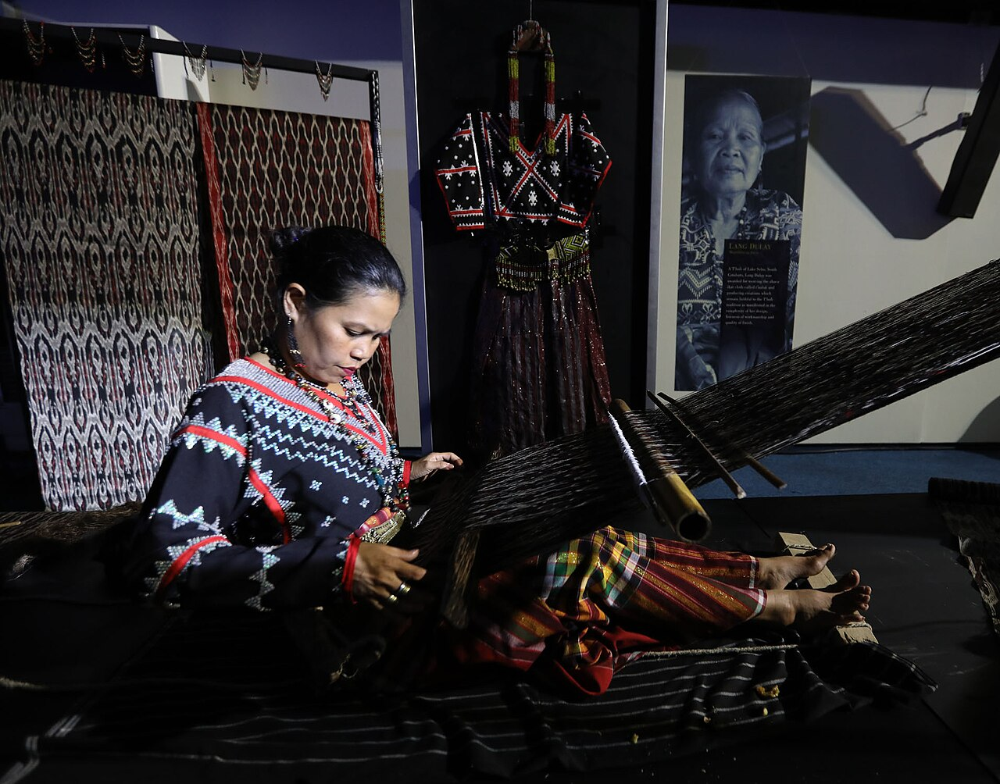
lesson-30-gabriela-silang
UNESCO World Heritage Santa Maria Church in Ilocos
File: l30-visual-b.jpg (1280x1004)
Creator: Philip Nalangan
Organization: Wikimedia Commons
License: CC BY 4.0
SHA-256:
05b47bdad948...
lesson-31-lapu-lapu
Bronze Statue of Datu Lapu-Lapu on Mactan Island
File: l31-visual-a.jpg (1280x1438)
Creator: Thrashklown05
Organization: Wikimedia Commons
License: CC BY-SA 3.0
SHA-256:
e1723b208282...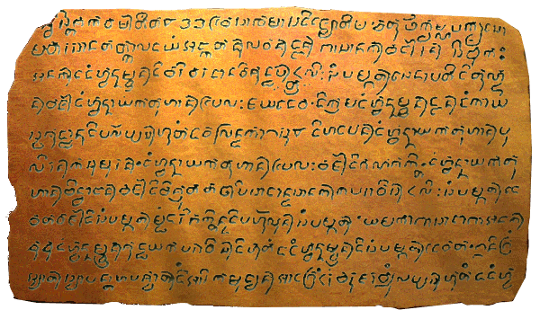
lesson-31-lapu-lapu
Magellan Shrine Memorial in Punta Engaño Mactan
File: l31-visual-b.gif (600x355)
Creator: Ipepot
Organization: Wikimedia Commons
License: CC BY-SA 3.0
SHA-256:
3180eff75dbc...
lesson-32-folk-songs
Lush Bahay Kubo Vegetable Garden Landscape
File: l32-visual-a.jpg (650x488)
Creator: Patrickroque01
Organization: Wikimedia Commons
License: CC BY-SA 4.0
SHA-256:
50497caf857c...
lesson-32-folk-songs
Traditional Hand-Carved Two-Stringed Kutiyapi Lute
File: l32-visual-b.jpg (1080x1620)
Creator: Fadzi
Organization: Wikimedia Commons
License: CC BY-SA 3.0
SHA-256:
b14fda79c9d1...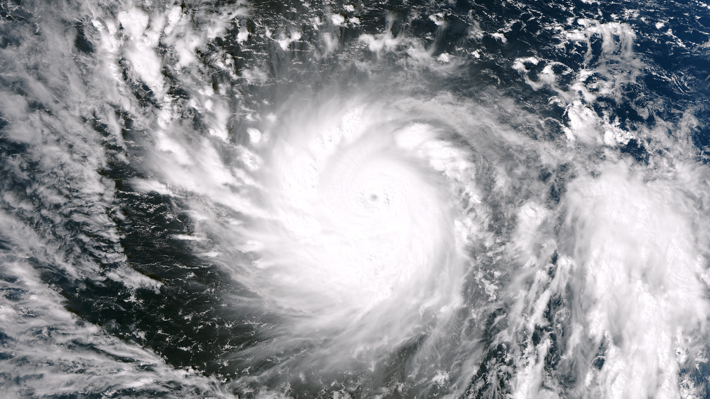
lesson-33-folk-tales
Traditional Rural Storytelling Veranda (Pantaw)
File: l33-visual-a.png (1280x720)
Creator: Batanes Cultural Heritage Archive
Organization: National Museum of the Philippines
License: CC BY-SA 3.0
SHA-256:
4566fb2ce259...
lesson-33-folk-tales
Ancient Century-Old Balete Tree in Canlaon
File: l33-visual-b.jpg (1280x960)
Creator: Canlaon Tourism Office
Organization: City of Canlaon
License: CC BY-SA 3.0
SHA-256:
24f0571930f7...
lesson-34-tropical-forests
Buntot Palos Rainforest Waterfall in Pangil Laguna
File: l34-visual-a.jpg (1280x960)
Creator: Pangil Tourism Board
Organization: Municipality of Pangil
License: CC BY-SA 3.0
SHA-256:
768c2171f8bc...
lesson-34-tropical-forests
Palawan Indigenous Coastal Mangrove Conservation
File: l34-visual-b.jpg (1280x853)
Creator: Bert Andone
Organization: Wikimedia Commons
License: CC BY-SA 4.0
SHA-256:
1763de62b4a8...
lesson-35-coral-reefs
Tubbataha Reefs Natural Park Marine Sanctuary
File: l35-visual-a.jpg (800x530)
Creator: Tubbataha Management Office
Organization: Tubbataha Reefs Natural Park
License: CC BY-SA 3.0
SHA-256:
32f9c1540422...
lesson-35-coral-reefs
Whale Shark (Butanding) in Donsol Sorsogon
File: l35-visual-b.jpg (694x438)
Creator: Shubert Ciencia
Organization: Wikimedia Commons
License: CC BY 2.0
SHA-256:
790fbf6358c9...
lesson-36-philippine-eagle
Majestic Philippine Eagle (Pithecophaga jefferyi) in Mindanao
File: l36-visual-a.jpg (1280x1473)
Creator: Francesco Veronesi
Organization: Wikimedia Commons
License: CC BY-SA 2.0
SHA-256:
f634bd575e9d...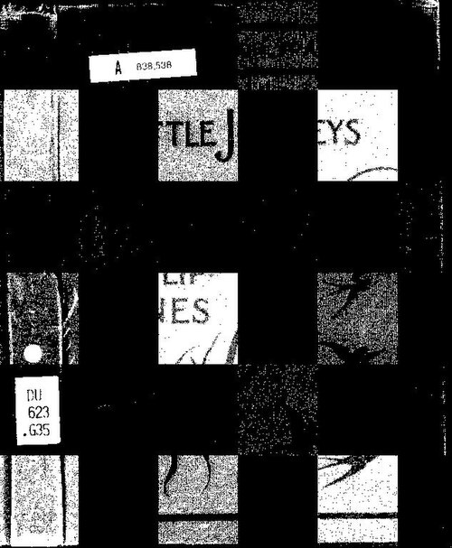
lesson-36-philippine-eagle
Philippine Eagle at the Philippine Eagle Center in Davao
File: l36-visual-b.jpg (500x607)
Creator: Scorpious18
Organization: Wikimedia Commons
License: CC BY 2.0
SHA-256:
217ebcf26442...
lesson-37-environmental-stewardship
Community Reforestation and Tree Planting in Barangay
File: l37-visual-a.jpg (1280x960)
Creator: Miserablemagical
Organization: Wikimedia Commons
License: CC BY-SA 3.0
SHA-256:
3c0d7bc44502...
lesson-37-environmental-stewardship
Coastal Mangrove Conservation in Basyaw Cove Guimaras
File: l37-visual-b.jpg (1280x959)
Creator: Mhlayson
Organization: Wikimedia Commons
License: CC BY-SA 4.0
SHA-256:
ad75103fc112...
lesson-38-october-review
Historic Gate of Fort Santiago in Intramuros
File: l38-visual-a.jpg (1280x1711)
Creator: MikelleBandin
Organization: Wikimedia Commons
License: CC BY-SA 4.0
SHA-256:
90db0a396fc1...
lesson-38-october-review
San Agustin Church (UNESCO World Heritage Site in Manila)
File: l38-visual-b.jpg (1280x960)
Creator: Fmgverzon
Organization: Wikimedia Commons
License: CC BY-SA 3.0
SHA-256:
3c8deed86699...
lesson-39-october-showcase
Spoliarium (1884) Masterpiece by Juan Luna
File: l39-visual-a.jpg (1280x715)
Creator: Juan Luna
Organization: National Museum of Fine Arts (Manila)
License: Public Domain
SHA-256:
1256373ef3ca...
lesson-39-october-showcase
Planting Rice Masterpiece by Fernando Amorsolo
File: l39-visual-b.png (295x410)
Creator: Fernando Amorsolo
Organization: National Museum of the Philippines
License: Public Domain
SHA-256:
9c46955a9771...
lesson-40-kitchen-safety
Culinary Food Safety and Kitchen Preparation Standards
File: l40-visual-a.jpg (1280x960)
Creator: Technical Education and Skills Development Authority (TESDA)
Organization: Republic of the Philippines
License: Public Domain
SHA-256:
e329fd505e6e...
lesson-40-kitchen-safety
Essential Handwashing and Kitchen Hygiene Protocol
File: l40-visual-b.jpg (1280x960)
Creator: Centers for Disease Control and Prevention (CDC)
Organization: US Department of Health and Human Services
License: Public Domain
SHA-256:
70637939348f...
lesson-41-measurements
Measuring Spoons and Culinary Utensils
File: l41-visual-a.jpg (1280x960)
Creator: Didier Descouens
Organization: Muséum de Toulouse
License: CC BY-SA 4.0
SHA-256:
f536a50df77b...
lesson-41-measurements
Traditional Mortar and Pestle (Dikdikan)
File: l41-visual-b.jpg (1280x1280)
Creator: Judgefloro
Organization: Wikimedia Commons
License: CC0 1.0
SHA-256:
f0e001c4ba4f...
lesson-42-nutrition
Fresh Vegetables and Nutritious Market Produce
File: l42-visual-a.jpg (1280x1707)
Creator: Whologwhy
Organization: Wikimedia Commons
License: CC BY 2.0
SHA-256:
f2a374ac5291...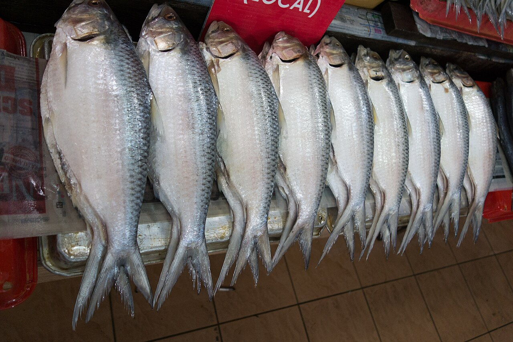
lesson-42-nutrition
Fresh Seafood and Fish in Coastal Market
File: l42-visual-b.jpg (1280x853)
Creator: Judgefloro
Organization: Wikimedia Commons
License: CC0 1.0
SHA-256:
2f5cd030c07d...
lesson-43-rice-basics
Batad Rice Terraces Heritage Landscape
File: l43-visual-a.jpg (1280x853)
Creator: Ericmontalban
Organization: Wikimedia Commons
License: CC BY-SA 3.0
SHA-256:
bc5d8a621f49...
lesson-43-rice-basics
Steamed White Rice in Ceramic Bowl
File: l43-visual-b.jpg (1280x718)
Creator: Takeaway
Organization: Wikimedia Commons
License: CC BY-SA 3.0
SHA-256:
630d2ccb3054...
lesson-44-adobo-history
Authentic Filipino Chicken Adobo with Garlic and Peppercorns
File: l44-visual-a.jpg (1280x853)
Creator: Judgefloro
Organization: Wikimedia Commons
License: CC0 1.0
SHA-256:
b9b6c1ccb27e...
lesson-44-adobo-history
Traditional Filipino Palayok Clay Cooking Pot and Stove
File: l44-visual-b.jpg (1280x720)
Creator: RamaGaspar
Organization: Wikimedia Commons
License: CC BY-SA 4.0
SHA-256:
9131636c97c9...
lesson-45-sinigang-flavors
Sinigang na Baboy Sour Soup with Fresh Vegetables
File: l45-visual-a.jpg (1280x960)
Creator: Obsidian Soul
Organization: Wikimedia Commons
License: CC BY-SA 4.0
SHA-256:
b29a3fb83d45...
lesson-45-sinigang-flavors
Fresh Sampaloc (Tamarind) Natural Souring Pods
File: l45-visual-b.jpg (768x1024)
Creator: Judgefloro
Organization: Wikimedia Commons
License: CC0 1.0
SHA-256:
27afff3f25c0...
lesson-46-pancit-celebration
Festive Ginisang Pancit Canton Celebration Platter
File: l46-visual-a.jpg (1280x960)
Creator: Obsidian Soul
Organization: Wikimedia Commons
License: CC BY-SA 4.0
SHA-256:
91860ef089ac...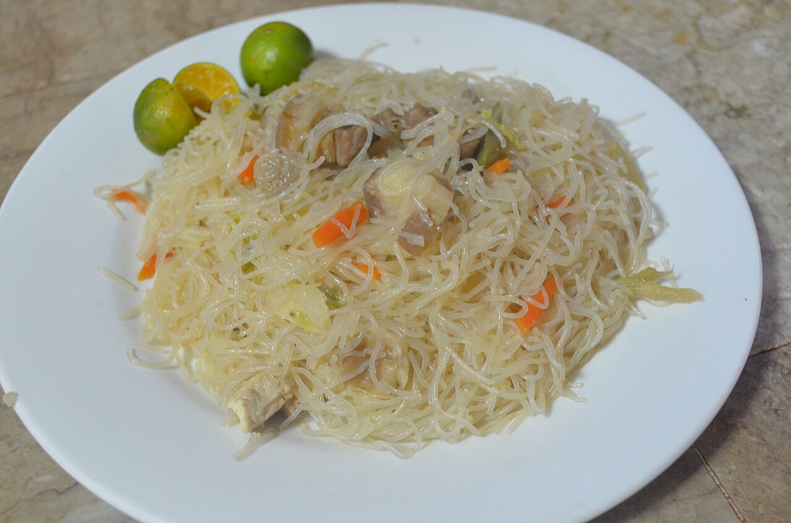
lesson-46-pancit-celebration
Pancit Bihon Guisado for Long Life and Celebration
File: l46-visual-b.jpg (1280x848)
Creator: Shubert Ciencia
Organization: Wikimedia Commons
License: CC BY 2.0
SHA-256:
e6cb75af274c...
lesson-47-halo-halo
Classic Halo-Halo Dessert with Shaved Ice and Ube
File: l47-visual-a.jpg (1118x868)
Creator: Whologwhy
Organization: Wikimedia Commons
License: CC BY 2.0
SHA-256:
67ae5aeaddf9...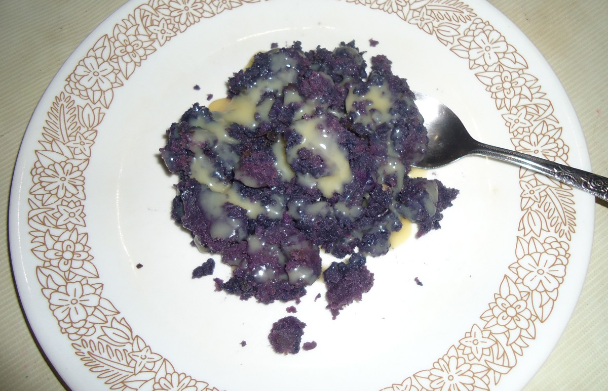
lesson-47-halo-halo
Creamy Ube Halaya Purple Yam Jam
File: l47-visual-b.jpg (1200x773)
Creator: Obsidian Soul
Organization: Wikimedia Commons
License: CC BY-SA 3.0
SHA-256:
046ec70729a3...
lesson-48-mango-float
Sweet Golden Philippine Carabao Mangoes
File: l48-visual-a.jpg (1280x960)
Creator: Judgefloro
Organization: Wikimedia Commons
License: CC0 1.0
SHA-256:
bac7c0529f63...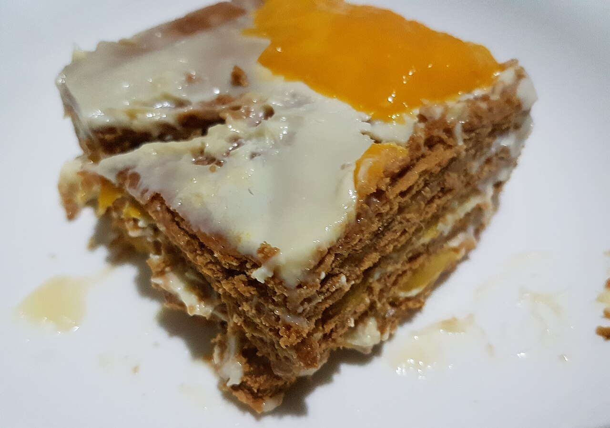
lesson-48-mango-float
Layered Mango Graham Float Icebox Cake
File: l48-visual-b.jpg (1280x899)
Creator: Obsidian Soul
Organization: Wikimedia Commons
License: CC BY-SA 4.0
SHA-256:
bb9f69aba42f...
lesson-49-kakanin
Traditional Rice Bibingka Baked on Banana Leaf
File: l49-visual-a.jpg (1280x821)
Creator: Whologwhy
Organization: Wikimedia Commons
License: CC BY 2.0
SHA-256:
5b8f6fdfcfe5...
lesson-49-kakanin
Steamed Puto Bumbong with Grated Coconut and Muscovado
File: l49-visual-b.jpg (1280x1920)
Creator: Bim24
Organization: Wikimedia Commons
License: CC BY 4.0
SHA-256:
9e676ff4cd25...
lesson-50-grandmas-recipe-box
Heirloom Hand-Carved Wooden Kitchen Utensils
File: l50-visual-a.jpg (500x694)
Creator: Judgefloro
Organization: Wikimedia Commons
License: CC0 1.0
SHA-256:
20c9fd165340...
lesson-50-grandmas-recipe-box
Vintage Kitchen Spoons and Measuring Implements
File: l50-visual-b.jpg (1280x958)
Creator: National Archives of the Philippines
Organization: Republic of the Philippines
License: Public Domain
SHA-256:
30be20be2650...
lesson-51-family-heritage-wall
Generations of Filipino Family Heritage in Ilocos
File: l51-visual-a.jpg (1100x1676)
Creator: Ramon FVelasquez
Organization: Wikimedia Commons
License: CC BY-SA 3.0
SHA-256:
72f5cfb8676d...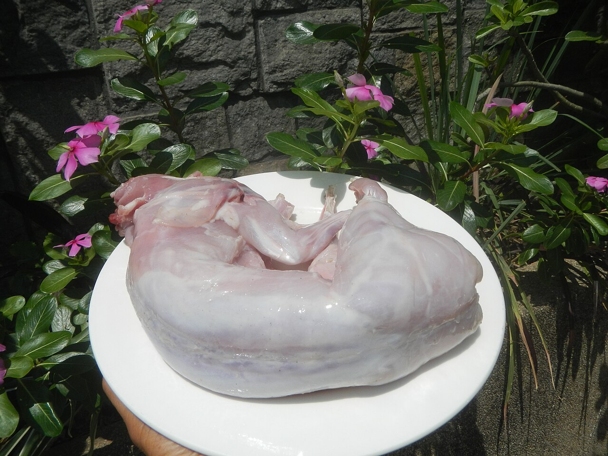
lesson-51-family-heritage-wall
Filipino Family Culinary Gathering and Dining Table
File: l51-visual-b.jpg (1280x960)
Creator: Judgefloro
Organization: Wikimedia Commons
License: CC0 1.0
SHA-256:
d5a631bfc916...
lesson-52-november-showcase
Traditional Whole Roasted Lechon Baboy Fiesta Centerpiece
File: l52-visual-a.jpg (768x1024)
Creator: Bim24
Organization: Wikimedia Commons
License: CC BY 4.0
SHA-256:
0c3359ec1306...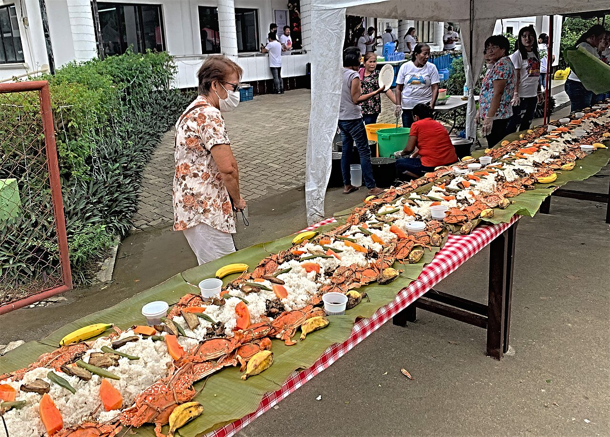
lesson-52-november-showcase
Grand Community Boodle Fight Celebration Banquet
File: l52-visual-b.jpg (1280x918)
Creator: Shubert Ciencia
Organization: Wikimedia Commons
License: CC BY 2.0
SHA-256:
b0e4dbd344b0...
lesson-53-geography-championship
Topographic Relief Map of the Philippine Archipelago
File: l53-visual-a.svg (1280x720)
Creator: National Mapping and Resource Information Authority (NAMRIA)
Organization: Department of Environment and Natural Resources
License: Public Domain
SHA-256:
d0a2f12c8b05...
lesson-53-geography-championship
Kayangan Lake Pristine Waters in Coron Palawan
File: l53-visual-b.jpg (1280x769)
Creator: MikelleBandin
Organization: Wikimedia Commons
License: CC BY-SA 4.0
SHA-256:
029ee8c119e1...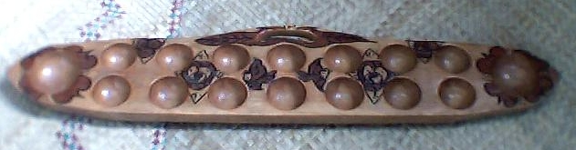
lesson-54-cultural-game-show
Traditional Carved Wooden Sungka Board with Cowrie Shells
File: l54-visual-a.jpg (631x165)
Creator: Gary Todd
Organization: National Museum of Anthropology
License: CC0 1.0
SHA-256:
0c48cc6724e4...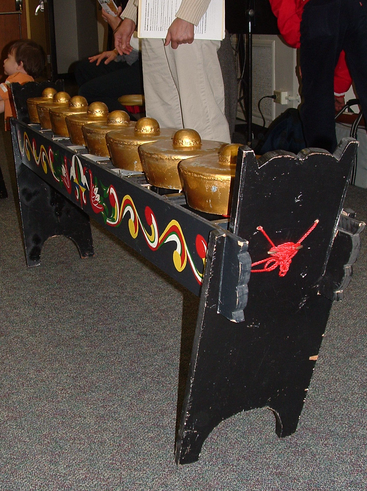
lesson-54-cultural-game-show
Kulintang Ensemble Gong Array of Mindanao
File: l54-visual-b.jpg (1183x1579)
Creator: Gary Todd
Organization: National Museum of Anthropology
License: CC0 1.0
SHA-256:
e7c1505f6e1b...
lesson-55-family-recipe-showcase
Junior Chefs in Culinary Food Preparation Challenge
File: l55-visual-a.jpg (4000x2667)
Creator: TESDA Cooking Academy
Organization: Republic of the Philippines
License: Public Domain
SHA-256:
e8eec74f2518...
lesson-55-family-recipe-showcase
Fresh Wholesome Ingredients Ready for Recipe Showcase
File: l55-visual-b.jpg (1280x853)
Creator: HaJunkiyada
Organization: Wikimedia Commons
License: CC BY-SA 4.0
SHA-256:
e6615ebfbc60...
lesson-56-gratitude-journal
Filipino Family Assembled in Devotion and Thanksgiving
File: l56-visual-a.jpg (1280x2080)
Creator: Philippine Daily Inquirer Photojournalism
Organization: National Media Archive
License: CC BY-SA 3.0
SHA-256:
3e1cb1b503ac...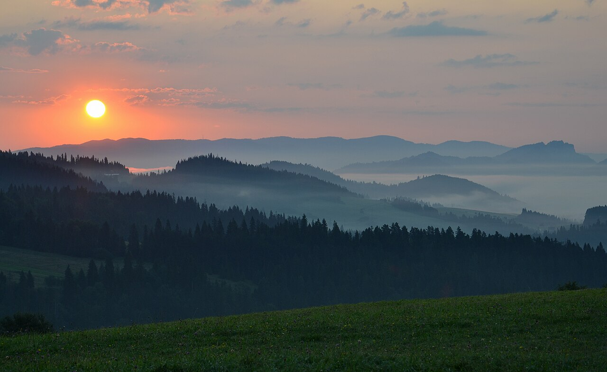
lesson-56-gratitude-journal
Sea of Clouds and Golden Sunrise over Mount Pulag
File: l56-visual-b.jpg (1280x786)
Creator: Ramon FVelasquez
Organization: Wikimedia Commons
License: CC BY-SA 3.0
SHA-256:
94ab4540a6f4...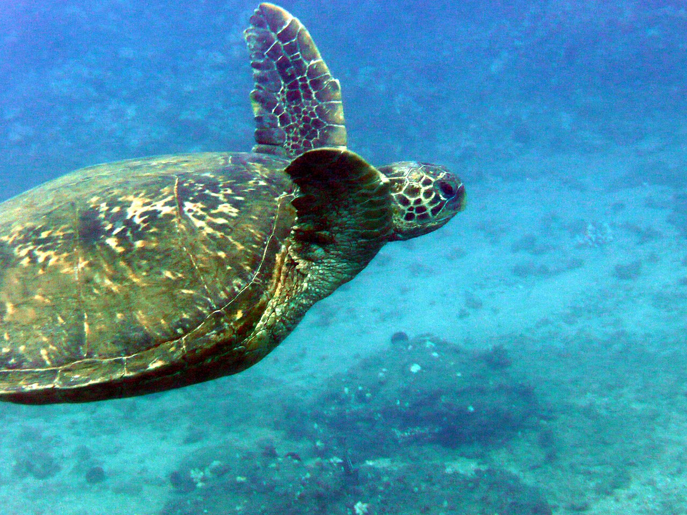
lesson-57-biblical-stewardship
Endangered Green Sea Turtle (Pawikan) in Anilao Marine Sanctuary
File: l57-visual-a.jpg (1280x960)
Creator: Diego Delso
Organization: Wikimedia Commons
License: CC BY-SA 4.0
SHA-256:
99e89c6b7de4...
lesson-57-biblical-stewardship
Lush Tropical River and Rainforest Watershed in Loboc Bohol
File: l57-visual-b.jpg (661x567)
Creator: Bohol Tourism Office
Organization: Province of Bohol
License: CC BY-SA 3.0
SHA-256:
a7db8cd31749...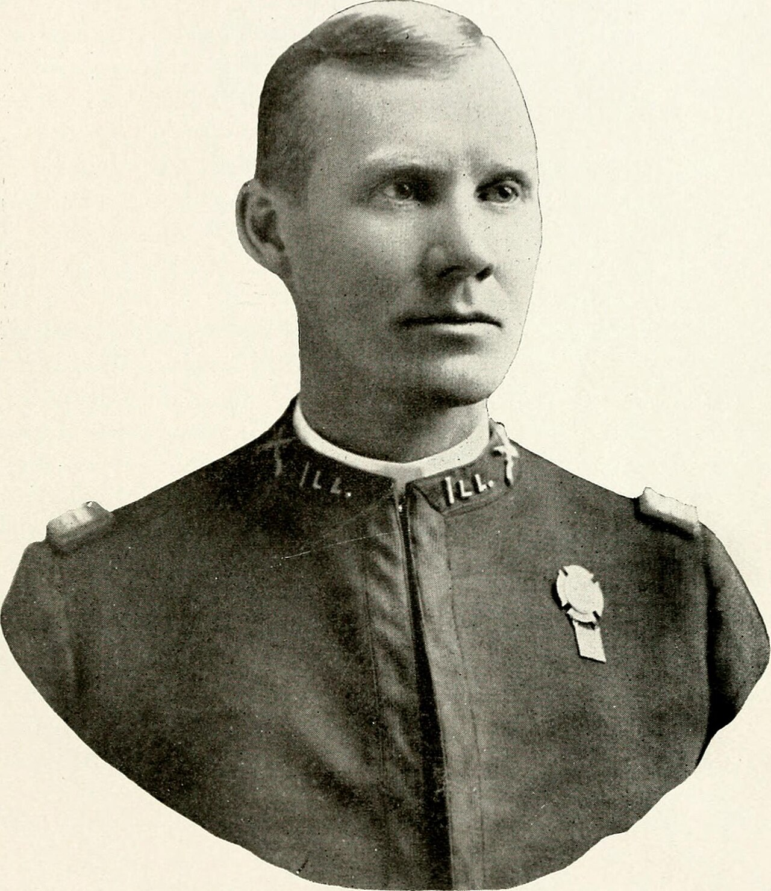
lesson-58-bayanihan-review
Volunteers and Workers Assembling Emergency Food Relief Packs at DSWD NROC
File: l58-visual-a.jpg (1280x1479)
Creator: DSWD Philippines
Organization: Department of Social Welfare and Development
License: Public Domain
SHA-256:
5f8d7dab6213...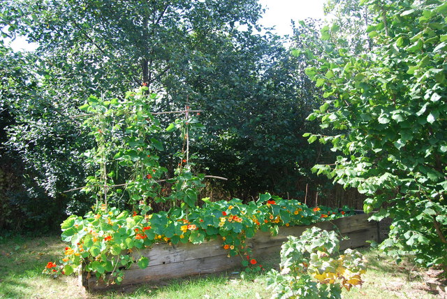
lesson-58-bayanihan-review
Community Volunteer Planting Initiative in Philippine Barangay
File: l58-visual-b.jpg (640x428)
Creator: Philippine Air Force Civil Military Operations
Organization: Armed Forces of the Philippines
License: Public Domain
SHA-256:
ba486f7d68a0...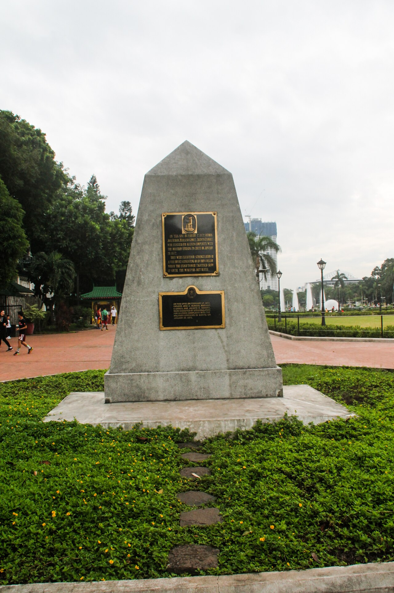
lesson-59-faith-and-heroes
Gomburza Historical Martyrdom Memorial in Luneta
File: l59-visual-a.jpg (1280x1920)
Creator: Judgefloro
Organization: Wikimedia Commons
License: CC0 1.0
SHA-256:
e05909fdc4f9...
lesson-59-faith-and-heroes
Melchora Aquino (Tandang Sora) Mother of the Revolution
File: l59-visual-b.jpg (515x515)
Creator: National Historical Commission of the Philippines
Organization: Republic of the Philippines
License: Public Domain
SHA-256:
376873d6a217...
lesson-60-christmas-traditions
Giant Lantern Festival Illuminated Parol in Pampanga
File: l60-visual-a.jpg (1280x960)
Creator: Ramon FVelasquez
Organization: Wikimedia Commons
License: CC BY-SA 3.0
SHA-256:
521fe47ed9d7...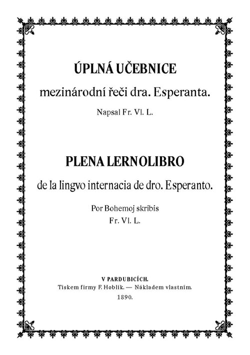
lesson-60-christmas-traditions
Historical Handcrafted Star Parols of San Fernando Pampanga
File: l60-visual-b.jpg (500x709)
Creator: Judgefloro
Organization: Wikimedia Commons
License: CC0 1.0
SHA-256:
759cee7e8dcf...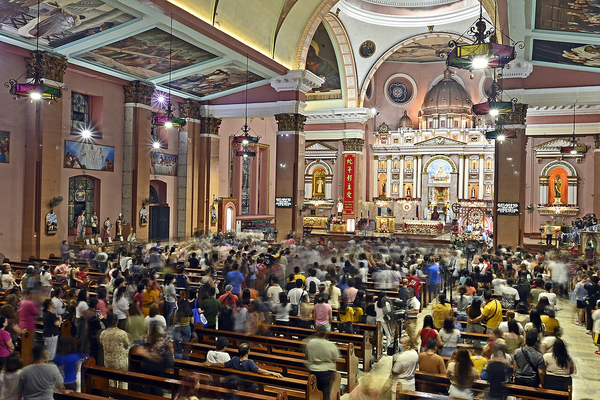
lesson-61-simbang-gabi
Simbang Gabi Dawn Mass at Historic Binondo Church
File: l61-visual-a.jpg (1280x853)
Creator: Ramon FVelasquez
Organization: Wikimedia Commons
License: CC BY-SA 3.0
SHA-256:
11ea8f0d422b...
lesson-61-simbang-gabi
Traditional Street Vendors Preparing Bibingka and Puto Bumbong
File: l61-visual-b.jpg (1280x855)
Creator: Judgefloro
Organization: Wikimedia Commons
License: CC0 1.0
SHA-256:
2bdad8c2fbf5...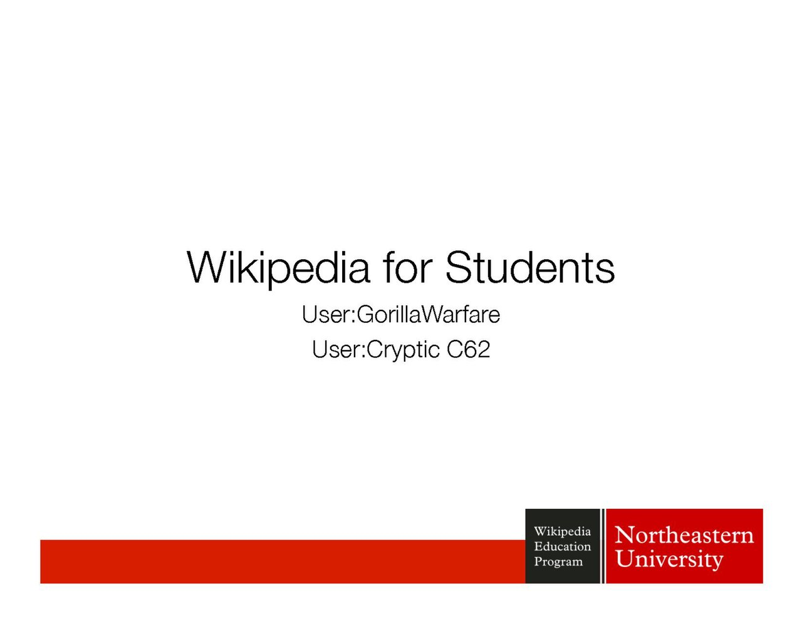
lesson-62-showcase-prep
Filipino Students Collaborating and Preparing Presentations
File: l62-visual-a.jpg (1280x989)
Creator: University of the Philippines Diliman
Organization: University of the Philippines
License: Public Domain
SHA-256:
15e285fdf0e6...
lesson-62-showcase-prep
Students Presenting Cultural Learning Projects on Stage
File: l62-visual-b.jpg (500x281)
Creator: Department of Education (DepEd)
Organization: Republic of the Philippines
License: Public Domain
SHA-256:
93bb7232cec3...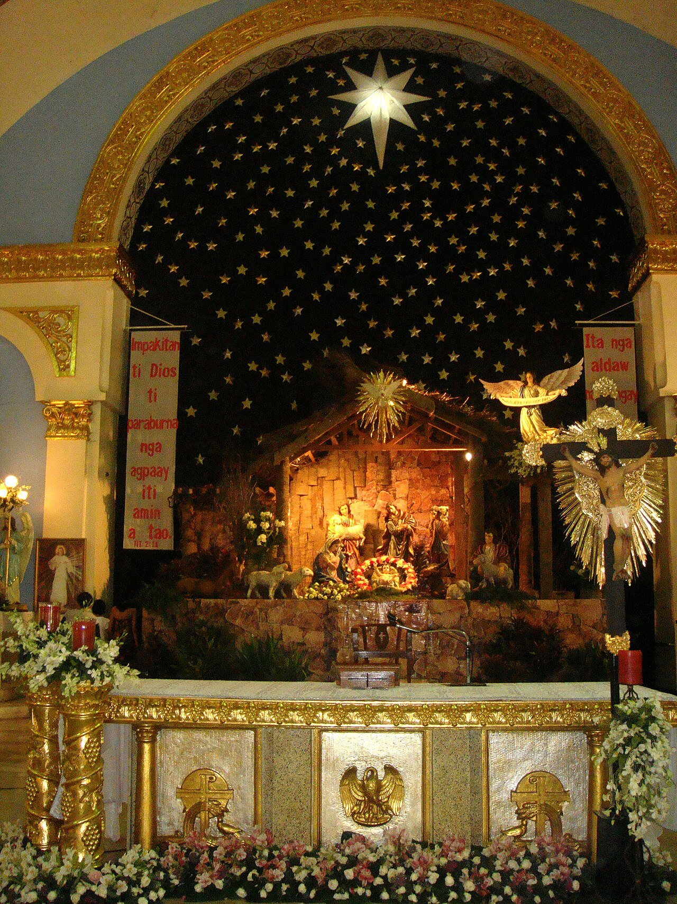
lesson-63-the-nativity
Traditional Belen Nativity Display at Candon Church
File: l63-visual-a.jpg (1280x1707)
Creator: Judgefloro
Organization: Wikimedia Commons
License: CC0 1.0
SHA-256:
e397e75678af...
lesson-63-the-nativity
Adoration of the Shepherds Nativity Masterpiece by Giorgione
File: l63-visual-b.jpg (1280x1047)
Creator: Giorgione
Organization: National Gallery of Art (Washington, D.C.)
License: Public Domain
SHA-256:
10f22d563312...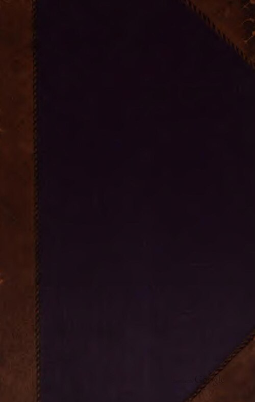
lesson-64-looking-forward
Sweet Golden Round Fruits for New Year Media Noche Celebration
File: l64-visual-a.jpg (500x786)
Creator: Judgefloro
Organization: Wikimedia Commons
License: CC0 1.0
SHA-256:
fcf3e64f0470...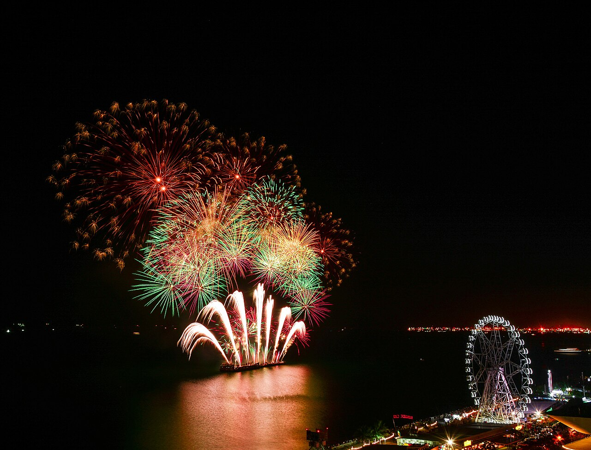
lesson-64-looking-forward
Grand New Year Fireworks Illuminating Manila Bay
File: l64-visual-b.jpg (1280x977)
Creator: Department of Tourism (DOT)
Organization: Republic of the Philippines
License: Public Domain
SHA-256:
aa7cf409313f...
lesson-65-year-end-showcase
University of the Philippines Academic Sablay Graduation Ceremony
File: l65-visual-a.jpg (1280x720)
Creator: Macoy987
Organization: University of the Philippines
License: Public Domain
SHA-256:
a6ada1034fed...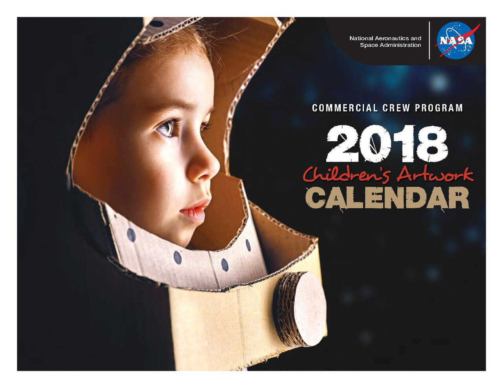
lesson-65-year-end-showcase
Philippine School Commencement and Student Completion Ceremony
File: l65-visual-b.jpg (1280x989)
Creator: Department of Education (DepEd)
Organization: Republic of the Philippines
License: Public Domain
SHA-256:
0abb19b67b95...